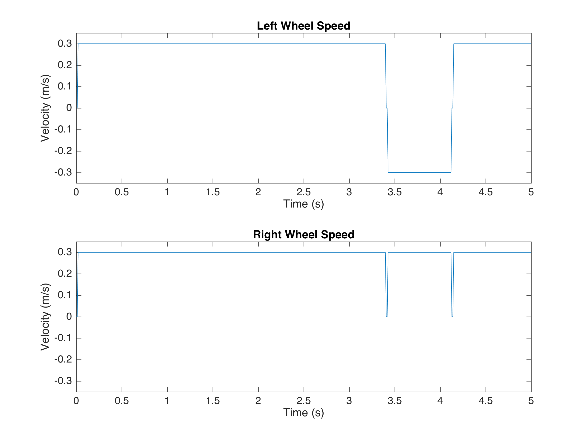
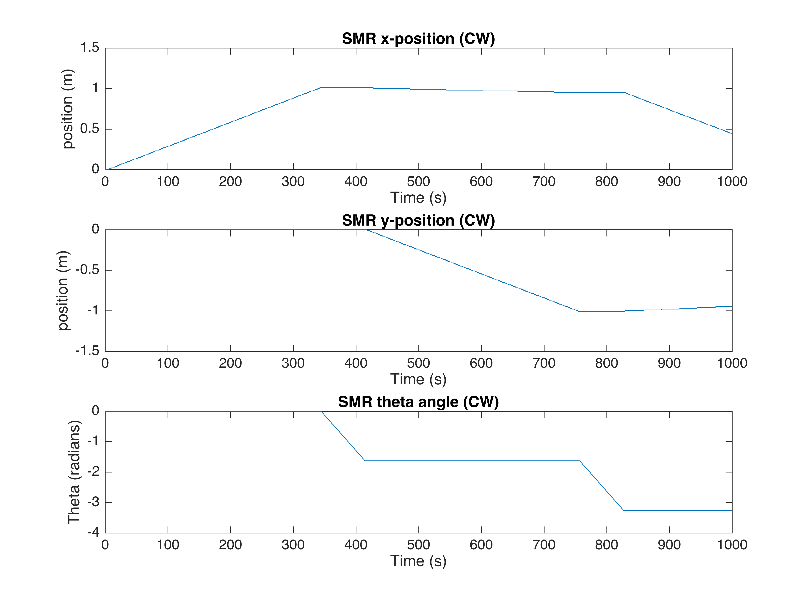
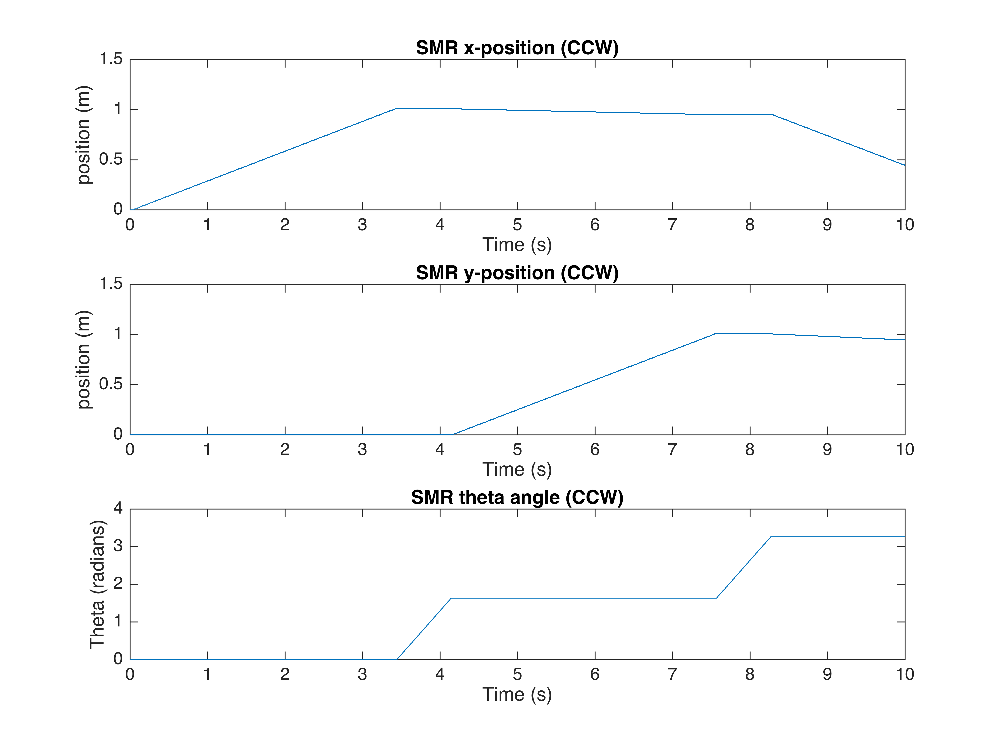
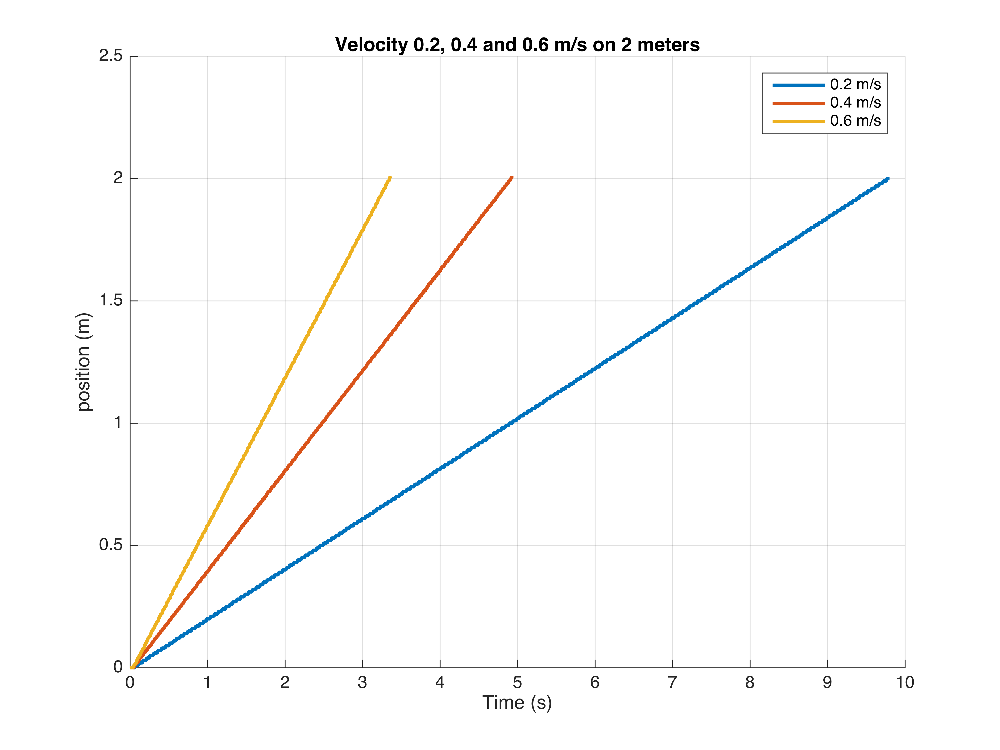
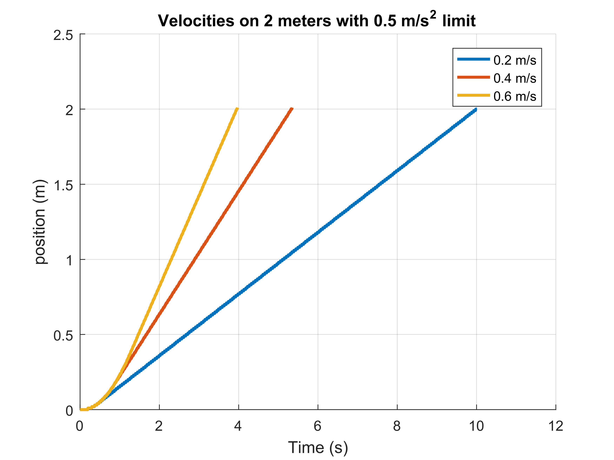
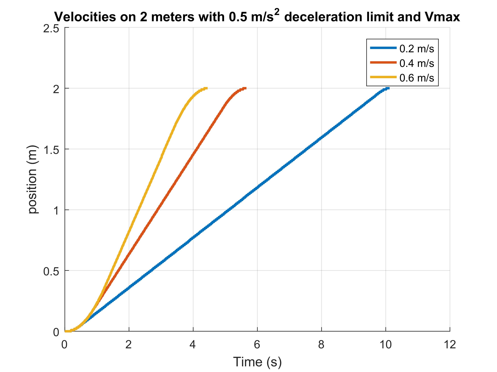
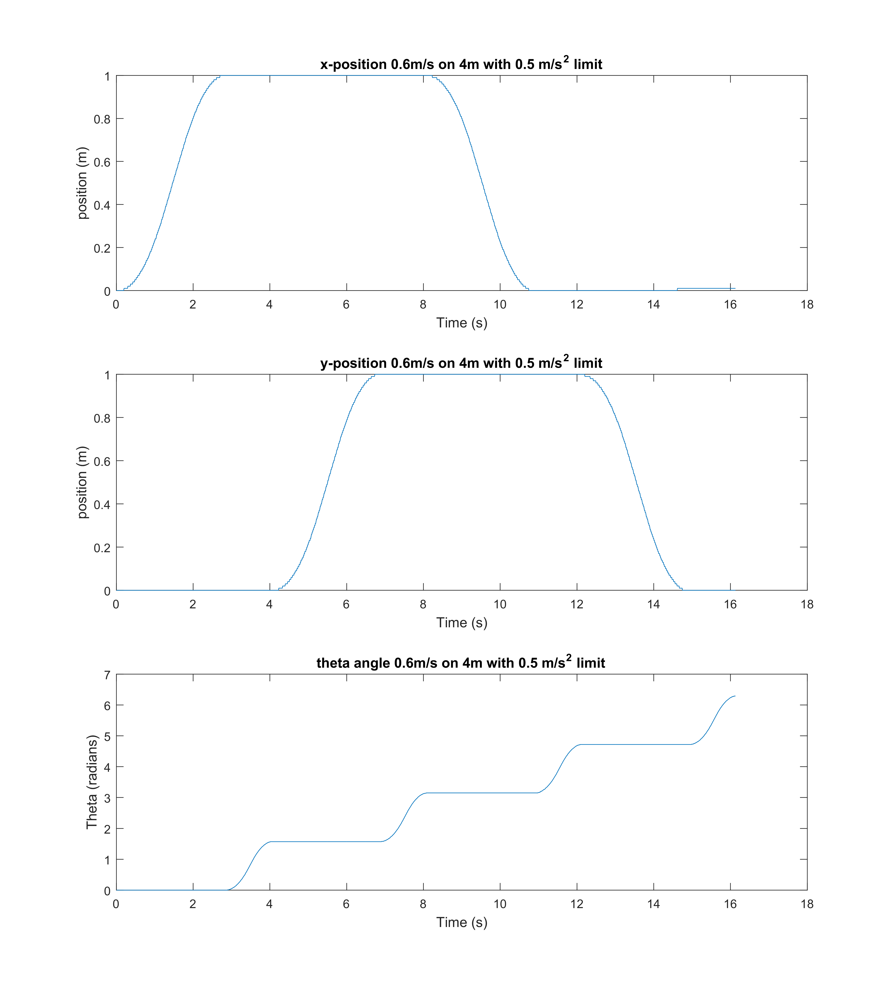

Extend the square program to enable data logging in a big array. At each sample of the mission state machine the mission.time , mot.motorspeed_l and mot.motorspeed_r should be logged. When the program terminates the array should be written to a ASCII file, one line for each sample. Make the file have the extension .dat to enable processing by MATLAB.
Link to square program in GitHub repositoryWhy should we use a statically allocated array? Think about what happens if the end of the array is reached.
Run the square program with logging and make a matlab plot of the motorspeeds versus time.
Implement odometry (i.e. find x,y, θ ) in the square program. The implementation should be done only modifying the functions reset_odo and update_odo and the struct odotype. Change the logging to log the time and odometry. Test with the simulator with both clockwise and counter clockwise squares. Make xy-plots of the odometry tests.
 Modify the program square the make the SMR move 2 m forward and stop. Make the experiment at the speeds 0.2 , 0.4 and 0.6 m/s (speed command). Plot x,y and θ versus time in MATLAB on the home page.
Limit the acceleration to 0.5 m/s2. This could be done by limiting the speed command increment ∆V for each sample to a suitable value. Make the experiment at the speeds 0.2 , 0.4 and 0.6 m/s (speed command). Plot x,y and θ versus time in MATLAB on the home page
Limit the deceleration to 0.5m/s2 This could be done by calculating the maximum allowed speed considering the remaining distance to target d and the allowable acceleration using the formula: Vmax=√2 amax d. Make the experiment at the speeds 0.2 , 0.4 and 0.6 m/s (speed command). Plot x,y and θ versus time in MATLAB on the home page.
Implement acceleration and deceleration limits for the turn command and base the turned angle on the odometry angle. Test with the simulator and plot x,y and θ versus time in MATLAB on the home page.
